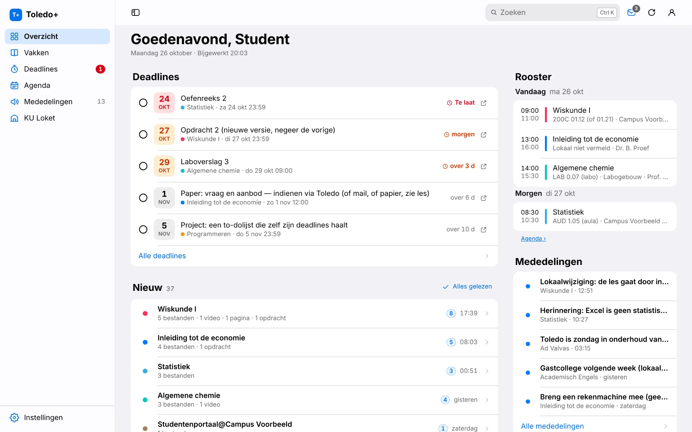
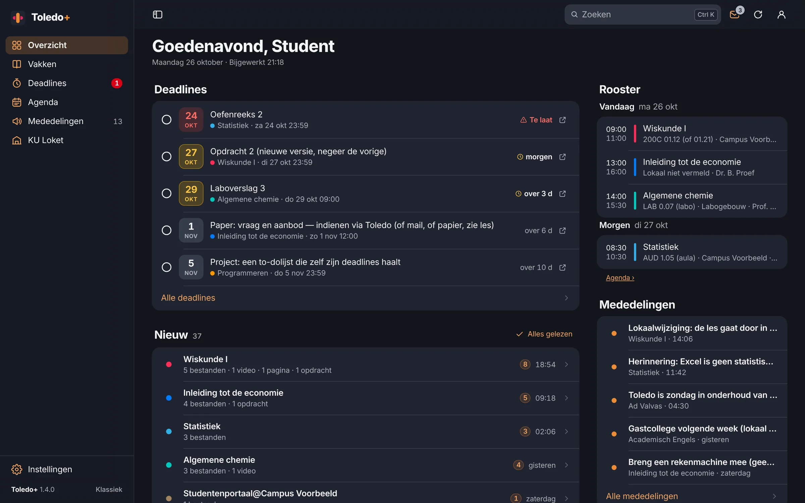

Extension gratuite pour Chrome et Edge
Toledo, but calm.
Tes échéances, nouveaux fichiers, cours et horaire, clairement au même endroit. Pour les étudiants de la KU Leuven et de son association.
Version 1.5.0Gratuit et open sourceProjet étudiant non officiel


Tout au même endroit.
Les échéances d’abord
Toutes tes échéances dans une liste, avec le temps qu’il te reste.
Nouveau, par cours
Ce qui a été ajouté, résumé en une ligne par cours.
Chaque cours, bien rangé
Tous les fichiers et dossiers dans une arborescence, avec recherche et téléchargement.
Cherche partout
Trouve n’importe quel document dans tous tes cours avec Ctrl K ou ⌘ K. Même leur contenu : pdf, Word et PowerPoint, avec le numéro de page.
Ton horaire
Tes cours depuis KU Loket par jour, semaine ou mois, à côté de tes examens.
À ta façon
Nederlands, English ou Français, clair ou sombre, tes propres couleurs.
Installer
Installé en une minute.
Tu installes Toledo+ toi-même, directement depuis GitHub.
Toledo+ 1.5.0
Pour Chrome, Edge, Brave, Arc, Opera et Vivaldi
Télécharge le fichier zip
Clique ci-dessus sur Télécharger Toledo+.
Décompresse-le
Place le dossier
toledo-plusà un endroit fixe, par exemple dans Documents. Laisse-le là : ton navigateur charge Toledo+ depuis ce dossier.Ouvre la page des extensions
Tape
chrome://extensionsdans la barre d’adresse (dans Edge :edge://extensions).Active le mode développeur
Dans Chrome, l’interrupteur est en haut à droite ; dans Edge, dans la colonne de gauche.
Choisis « Charger l’extension non empaquetée »
Sélectionne le dossier
toledo-plus(celui avecmanifest.json). Ouvre ensuite Toledo et connecte-toi comme d’habitude.
Quel navigateur ?
Chrome, Edge, Brave, Arc, Opera, Vivaldi Fonctionne, via la page d’extensions du navigateur.
Firefox et Safari Pas encore pris en charge : ils utilisent un autre format d’extension.
Mettre à jour
Toledo+ te prévient quand une nouvelle version est disponible.
Télécharge le nouveau zip, remplace le contenu de ton dossier toledo-plus et clique sur ↻ à côté de Toledo+ sur la page des extensions. Tes réglages sont conservés.
Chrome signale au démarrage des extensions en mode développeur ? Cela arrive pour toute extension hors du Chrome Web Store. Tu peux simplement fermer le message.
Tes données restent dans ton navigateur.
Toledo+ n’a ni comptes ni traceurs. Tes cours, échéances et fichiers ne circulent qu’entre ton navigateur et Toledo ou KU Loket. Seul un signal anonyme quotidien (identifiant aléatoire, version, navigateur et langue) indique combien de personnes utilisent Toledo+ ; tu peux le désactiver dans Réglages → À propos.
Questions
Est-ce une application officielle ?
Non. Toledo+ est un projet étudiant indépendant, sans lien avec la KU Leuven ni les autres établissements de son association. Il utilise simplement ta propre session Toledo, comme ton navigateur.
Est-ce que ça marche pour mon école ?
Toledo+ fonctionne partout où tu utilises Toledo sur toledo.kuleuven.be : la KU Leuven et son association (notamment LUCA, UCLL, Thomas More, Odisee et VIVES). L’horaire et les examens viennent de KU Loket ; sans accès, tu vois le planning de Toledo. Quelque chose cloche chez toi ? Dis-le sur GitHub.
Est-ce payant ?
Non. Toledo+ est gratuit et open source (licence MIT). Pas de pub, pas d’abonnement, pas de compte.
Pourquoi pas dans le Chrome Web Store ?
Toledo+ est distribué directement via GitHub. Ainsi, chaque nouvelle version est disponible tout de suite et tu vois exactement quel code tu installes.
Comment le désactiver ou signaler un problème ?
Choisis Toledo classique dans le menu du compte en haut à droite pour voir la page d’origine, ou supprime l’extension sur la page des extensions. Signale un problème ou une idée sur GitHub, sans données personnelles.